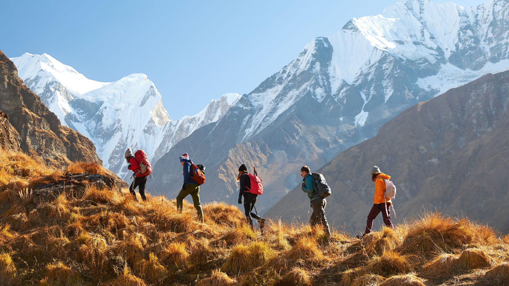
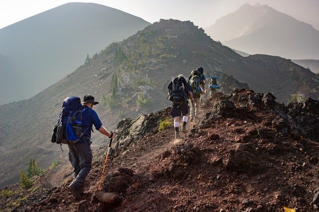
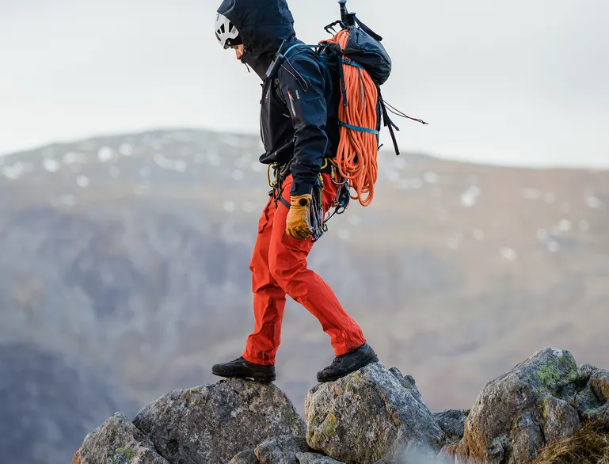
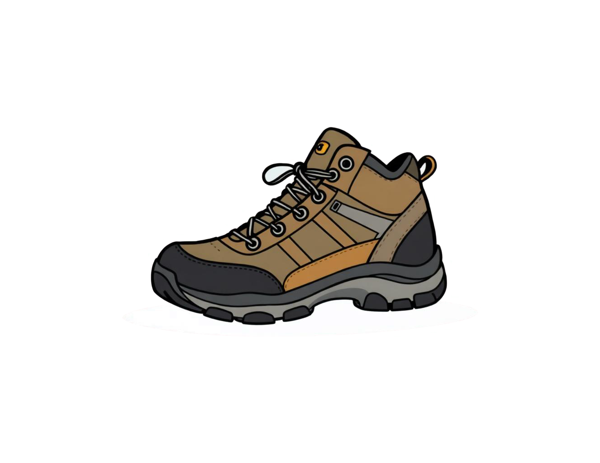

To hike uphill more efficiently, start by pacing yourself steadily and avoid rushing, which can tire you out quickly. Keep your steps short and quick to maintain better balance and conserve energy. Use your arms to help propel your body upward, and engage your core muscles for added stability and support. Wear sturdy shoes with good grip to prevent slipping and reduce impact on your joints. Practice deep, rhythmic breathing to ensure your muscles get enough oxygen and help manage fatigue. Take short, regular breaks to recover and prevent burnout, especially on steep sections. Stay well-hydrated and eat small snacks to maintain your stamina throughout the hike. Planning your route in advance and choosing trails suitable for your fitness level can also prevent overexertion. By applying these tips, you can make your uphill hikes more efficient, safe, and enjoyable.



